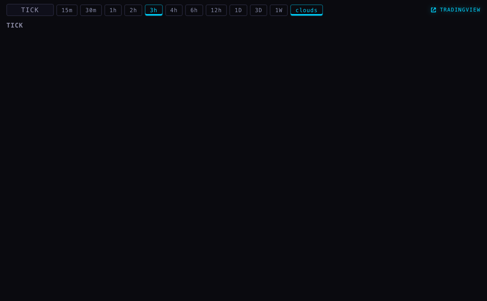
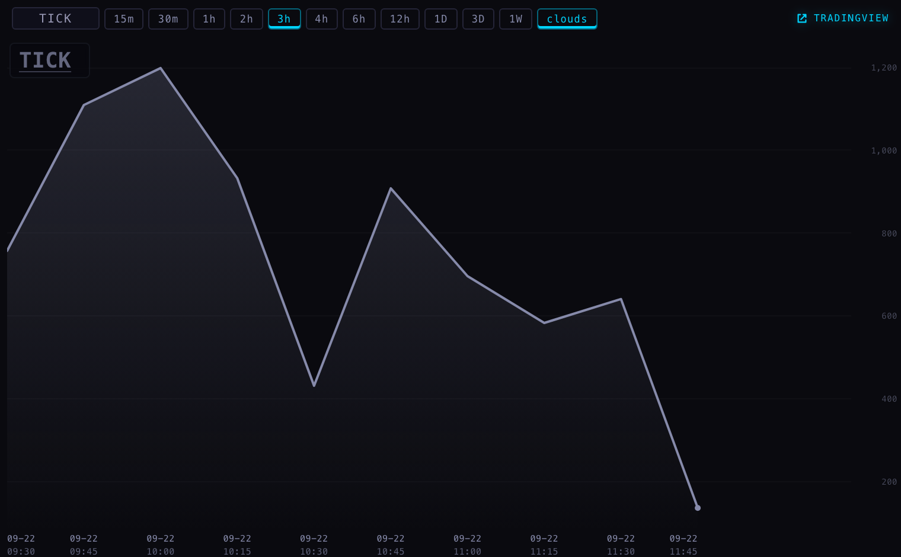

Nothing here has been bought, started, deployed or logged into. The gateway was not launched, no cloud box was created, no subscription was touched. What exists is the part that needed no login: the exact contract for each number you are missing, the code that turns those numbers into Station charts, its tests, the runner definitions, and a script for typing your own IBKR login into wherever you decide it should live. The decisions with money attached are all in section 1 and they are all yours.
| Decision | What it costs | What it gets you | What I would do |
|---|---|---|---|
| Turn on the NYSE index feed at IBKR (the subscription that carries TICK, TRIN and advance/decline) | $2.00 a month $19.50 if your account is marked professional | TICK, TRIN and advance/decline as real Scintilla charts — your own greys, the cloud ribbon, any timeframe, and history we keep rather than rent | Yes. It is the cheapest line in the whole estate and it is the only thing standing between you and three of the five panes. |
| Where the gateway lives — this MacBook, or a small always-on box | MacBook: $0 Cloud box: about $5–7 a month | The MacBook can prove everything works. Only the box can keep it running while the lid is shut. | Both, in that order. Prove it on the MacBook this week for nothing, then move it to a box once you have seen the charts. |
| The put/call ratio — IBKR does not sell it | Cboe's own daily file: $0 dxFeed live: no public price | Either yesterday's ratio, honestly labelled, or a live one at an unknown monthly price | Take the free daily one and label it "yesterday". Ask dxFeed for a price only if the pane matters to you live. |
| VIX | $0 | Nothing to do. It is already on the wall from FMP, at every width the chart API serves. | Do not buy it twice. |
| Overnight prices for your stocks, 8pm to 4am | IBKR's own words: "available free with permission" | What your names did overnight, on the same charts as the day session | Switch the permission on while you are in there. Confirm what it costs on your own account before we collect anything. |
Prices are what IBKR published when we last read their pricing page, on 14 August 2026, and I could not re-read it today: their site refuses an automated read (it answered "403 forbidden"). Your own account is the only thing that can tell you what you already pay for — section 3 is the short list to look at.
| What you call it | What we ask IBKR for | What it is, in one line | Subscription | A month | How sure I am |
|---|---|---|---|---|---|
| TICK | TICK-NYSE · type Index · exchange NYSE · USD | How many NYSE stocks just ticked up, minus how many ticked down | NYSE index feed | $2.00 | IBKR's own API documentation names this contract. Not yet proven on your account. |
| TRIN | TRIN-NYSE · Index · NYSE · USD | Whether the volume is going with the stocks that are rising or the ones that are falling | NYSE index feed | included | Same: documented by IBKR, unproven on your account. |
| ADD | AD-NYSE · Index · NYSE · USD | Rising NYSE stocks minus falling ones | NYSE index feed | included | Documented. One extra step: IBKR has been known to deliver the two counts on oddly named fields, so we record every field for a whole session before we publish a single number. |
| CUMTICK | nothing — we add it up ourselves | TICK added up through the day, starting at zero each morning | none | $0 | Certain: it is our own arithmetic over our own TICK series. A minute we never received is marked as a hole, never filled in. |
| VIX | nothing — already yours | The volatility index | none | $0 | Checked today: the chart API answered with a 9,271-bar daily series and a live quote of 14.66. Buying it from IBKR would be paying twice. |
| PCC (put/call) | IBKR has nothing to ask for | How many puts trade against calls | — | — | IBKR publishes no market-wide put/call number through its API, and lists no exception. Cboe publish theirs daily for free; dxFeed sell a live one. |
| Overnight prices | your own stock, with the exchange set to OVERNIGHT | 8:00pm to 3:50am New York, over 10,000 US stocks and funds | US stock data you may already have | "free with permission" | IBKR's own overnight pages say the window, the size and the setting. What "permission" means for your username is the one thing to check. |
Client Portal → Settings → Account Settings → Market Data Subscriptions. Read only: do not press Subscribe, Configure or Continue while you are looking.
TICK-NYSE, TRIN-NYSE, AD-NYSE. If you are not entitled, IBKR's own Market Data Assistant pops up and names the subscription it wants. That single pop-up settles what we are guessing at above.IB Gateway is a desktop Java program. It has no key-only mode: something has to keep a window open, even an invisible one, and a login has to be approved on your phone once a week. That is the shape of the problem, not a thing we can configure away.
| This MacBook | A small always-on box | The iMac | |
|---|---|---|---|
| Cost | $0 | about $5–7 a month | — |
| When the lid shuts | the feed stops, and the minutes it missed are missing until it wakes and asks for them again | keeps running | — |
| Weekly login | you are already at the keyboard | the same phone tap, from wherever you are | — |
| Set-up | already installed: IB Gateway 10.47 is on this MacBook, set to API-only, live mode, port 4000, and it last ran here on 15 August | one container each for the gateway and the reader; both definitions are written and in the branch | out of bounds, by your instruction — nothing was read there, nothing was run there |
| Risk | your password has to sit in a file on the machine for the gateway to log itself in | same file, on a box that does nothing else | — |
Prove it here first, because it is free and takes an afternoon: you open IB Gateway, we point the reader at it, and within one session you can see whether the three contracts answer, what fields they carry, and whether the charts look right. Only then pay for a box, and move the same two definitions onto it. Your own earlier ruling — that a gateway tied to a sleeping Mac is useless as a feed — is right, and it is why the box is where this ends up. It is just not where it should start.
IBKR throws the login out roughly every seven days. If that happens quietly, the wall keeps drawing a line that stopped moving — the one outcome worth preventing. So the lane assumes it has failed unless it can prove otherwise.
| What the lane says | When | How loud | What you do |
|---|---|---|---|
| "IBKR login runs out soon" | 36 hours before it expires — Saturday morning, for a Sunday expiry | phone push, and a strip across the top of the Station and the Hub, every hour | Sign in once whenever it suits you and nothing ever stops |
| "IBKR login has expired" | the moment it lapses | same three places, every fifteen minutes, and the strip cannot be dismissed | Sign in now — the panes are frozen until you do |
| "IBKR is logged out" | the gateway is not connected at all | same | Open the gateway, sign in, approve the push |
| "IBKR has gone quiet" | nothing has arrived for six minutes while the market is open | same | Check the gateway is still up — this is the one that catches a silent death |
Out of hours, quiet is not an alarm: the market being shut is not a fault. And the panes themselves say which one it is — a pane whose feed is logged out reads "ibkr gateway down" in words instead of sitting black.
Exactly the way FMP's already do, so there is one path and not a second private one.
normalized/ibkr_internals_bars_v1. Breadth is not a share price, and the code refuses outright to write into a price store — that refusal is one of the tests./candles route the Station already uses for everything else.We keep minutes, so any width can be built from them. I asked the chart API today for a seven-minute VIX and it refused — FMP publishes a fixed set of widths and that is not one of them. A seven-minute TICK will simply be served, because seven one-minute bars is all that takes. No timeframe gets refused.
| Pane | Today | After the feed is on |
|---|---|---|
| TICK, TRIN, ADD | TradingView's free widget, labelled as theirs | Scintilla charts, drawn from our own bars |
| CUMTICK | TradingView's TICK chart standing in — their nearest symbol, not the one you asked for | The real thing, added up from our own TICK |
| VIX | Already a Scintilla chart | Unchanged |
| PCC | TradingView's widget | Still theirs, unless you buy a live one — or ours from Cboe's daily file, marked "yesterday" |


The wall needed almost nothing for this. It already asks for a Scintilla series first and only falls back to TradingView when the answer has a name. The change is four lines: the four internals are now asked for instead of written off in advance, and a "we do not carry that symbol yet" answer counts as a name. So today the panes look exactly as they do now, and the day the feed is on they become our charts with no further work.
| Piece | Where | State |
|---|---|---|
| The contract table — every symbol, its subscription, its price, and how sure we are | services/ibkr-gateway/contracts.mjs | Written, read by the code and by this page |
| The writer: one way in, a repeat changes nothing, a correction is taken, a bar still forming never overwrites a finished one, and the minutes we never got are found and asked for again | ibkr-bars.mjs | Tested |
| The reader: any width, built from the stored minutes, never spanning two days, and every refusal carries a name the pane can print | ibkr-serve.mjs | Tested |
| New York session arithmetic, including the two days a year the clocks move | sessions.mjs | Tested |
| The weekly-login alarm and its wording | reauth-watch.mjs | Tested |
| The reader that talks to the gateway — read-only, no order call anywhere in it | collector.py | Written, never run: it needs your login |
| The two ways to run it | docker-compose.yml, com.scintilla.ibkr-internals.plist | Written, not started |
| Typing your login in without it being seen | SET IBKR LOGIN.command | Written. It asks where to put it, echoes nothing, and refuses to create a cloud app because that costs money |
| The Station change | _provider/provider.js | Four lines, tested |
The feed side is on branch agent/ibkr-lane-20260923 in the scintilla repository; the Station side and this page are on agent/ibkr-internals-20260923. Neither is pushed and nothing is deployed.
Eighteen tests on the feed side, five on the Station side, all passing. The Station's whole suite runs 416 tests: the 18 that fail on this branch are the same 18 that already fail on production, so nothing here broke anything.